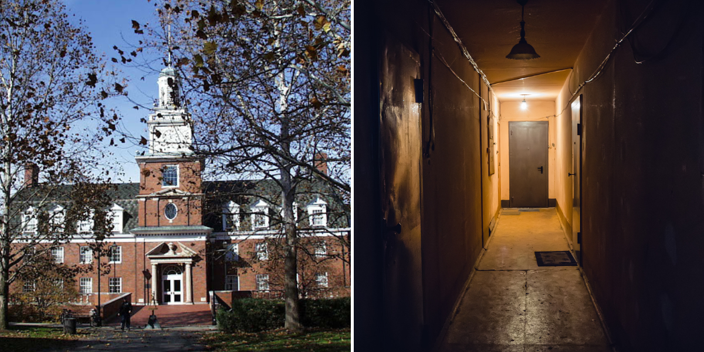

Uno de los casos más apasionantes que ha suscitado muchas investigaciones en Estados Unidos. Se trata de una habitación de la Universidad de Ohio donde han ocurrido fenómenos extraños:desde sesiones de ocultismo, la aparición de caras e incluso desapariciones y muertes.
Según las fuentes, un estudiante murió dentro de esta habitación al realizar un acto de ocultismo para contactar con los muertos, por lo que para muchos expertos de lo paranormal, está maldita. La habitación está cerrada desde hace décadas.  Pincha aquí para ir a la página anterior